我负责的核心内容
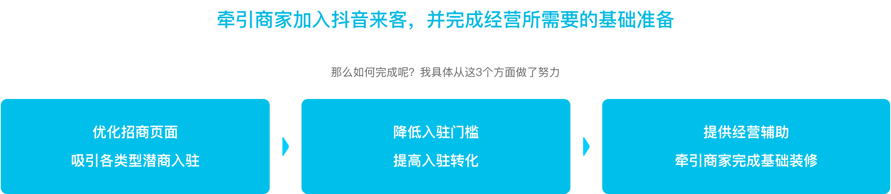
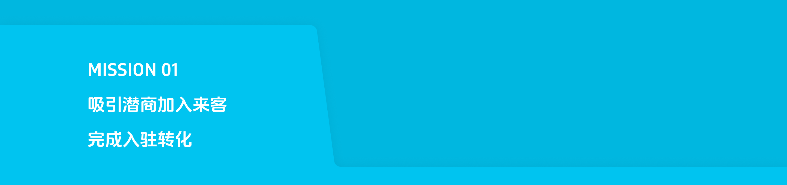
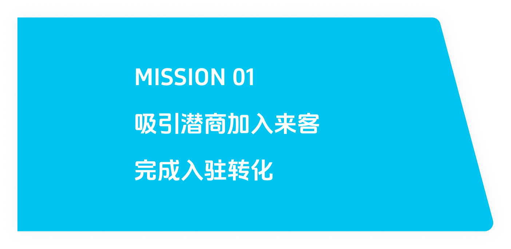
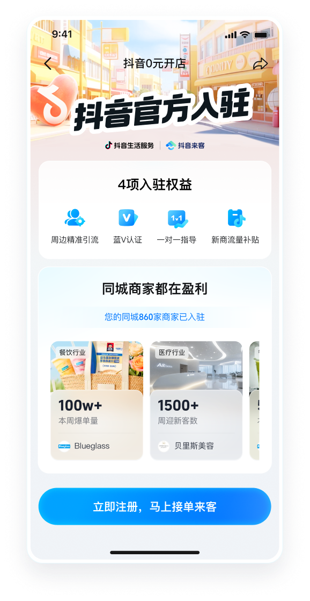
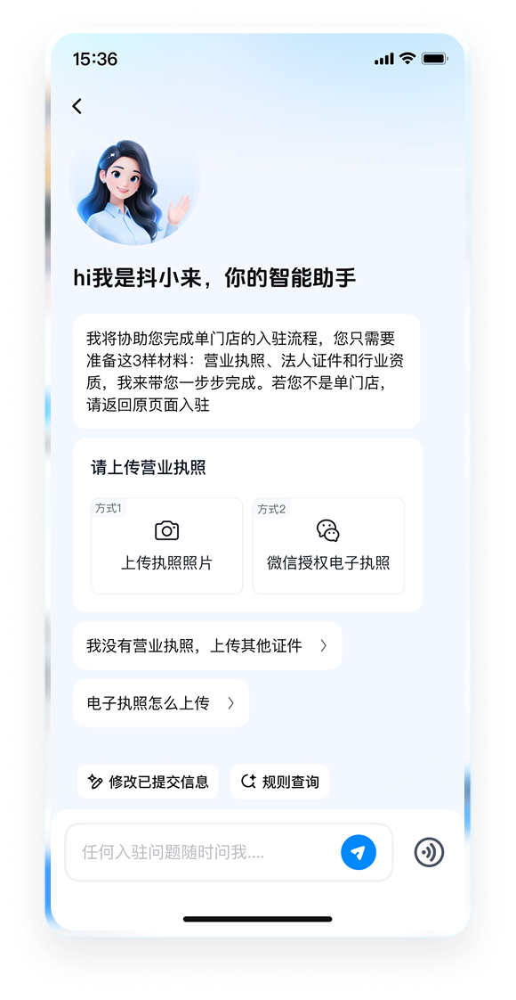
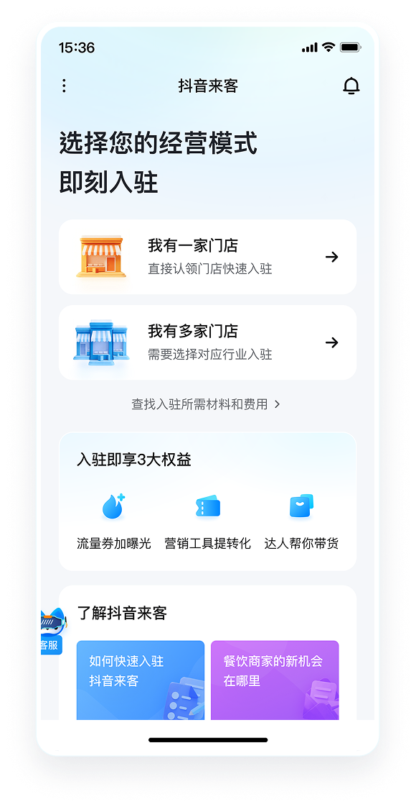
先看现状，总结目前核心目标...
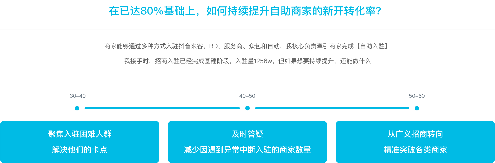
入驻链路流程长、需要材料多，中小型商家不会做
来客的入驻只有两件事「选择品类+传材料」
但一些中小型商家，他们的经营情况往往十分复杂，更容易出现缺材料、材料不标准的情况。
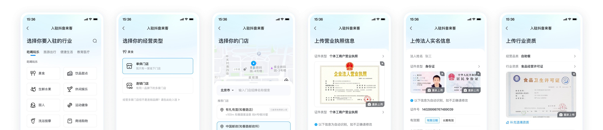
到底是哪些环节有问题，需要具体看数据漏斗、听商家声音
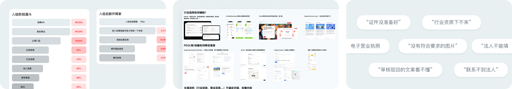
核心问题总结
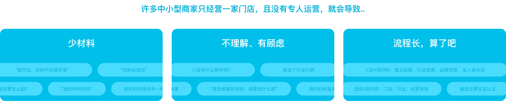
How to do
解决卡点需要“小而灵”，从细节上一点点解决
材料信息标准化
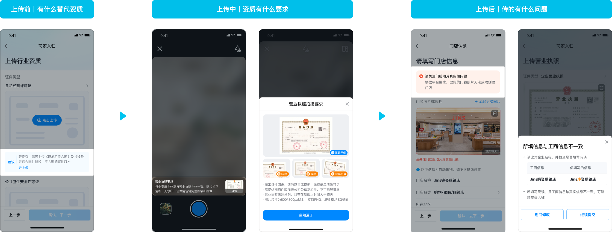
商家视角说法，减少理解成本
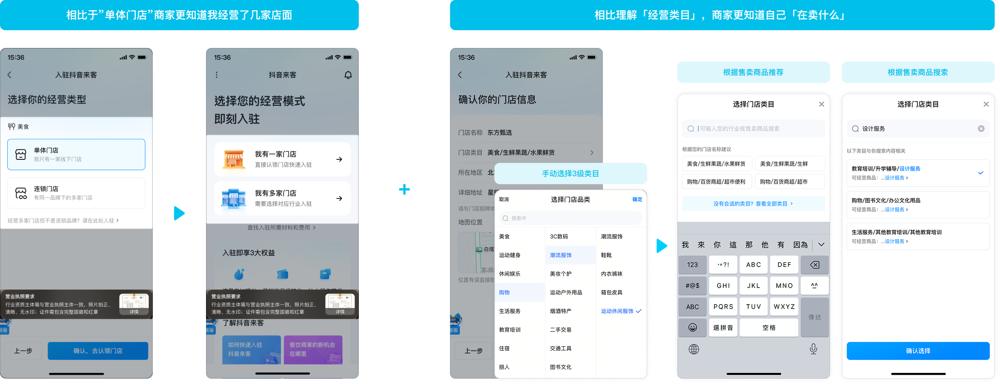
图片自动识别，少手填
拍照自动识别回填门店信息，不用手填，减少决策负担
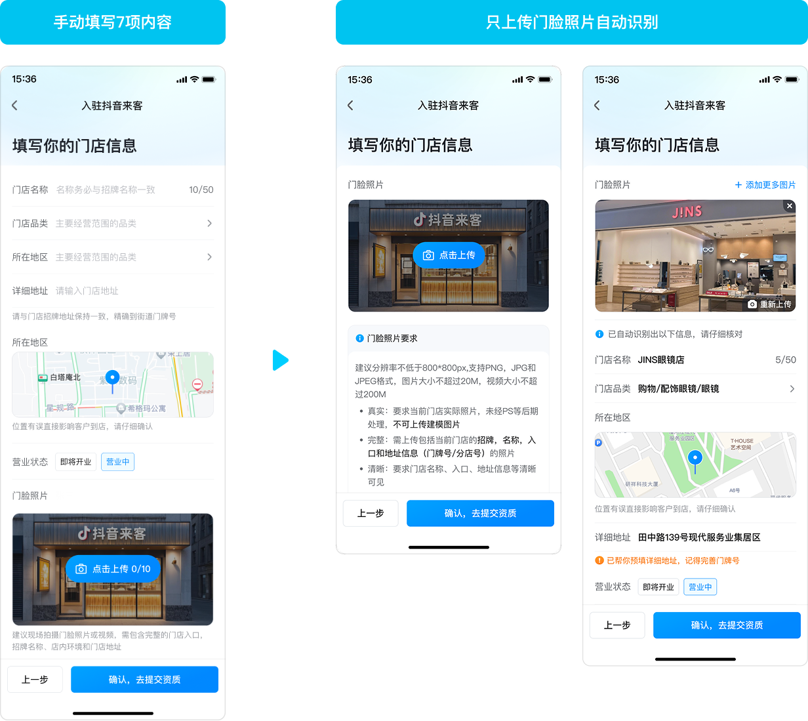
入驻商家基数太大，整体效果并不显著，
每个Q平均只会增长1-2pp，
但只要优化了体验，就会带来实在的好结果
The second challenge
如何及时解决商家问题，AI能做到吗?
人工入驻核心优势就是能及时解决商家问题，一步步带着商家做，握有安全感。 但一成本高，挑战 AI 对话成本后，也要保持这样的优点，交互需要额外注意...
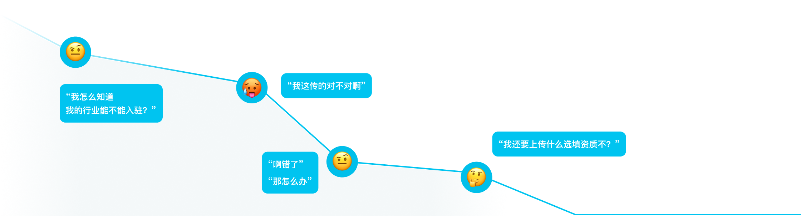
How to do
每次就一步，任务清晰、行动明确
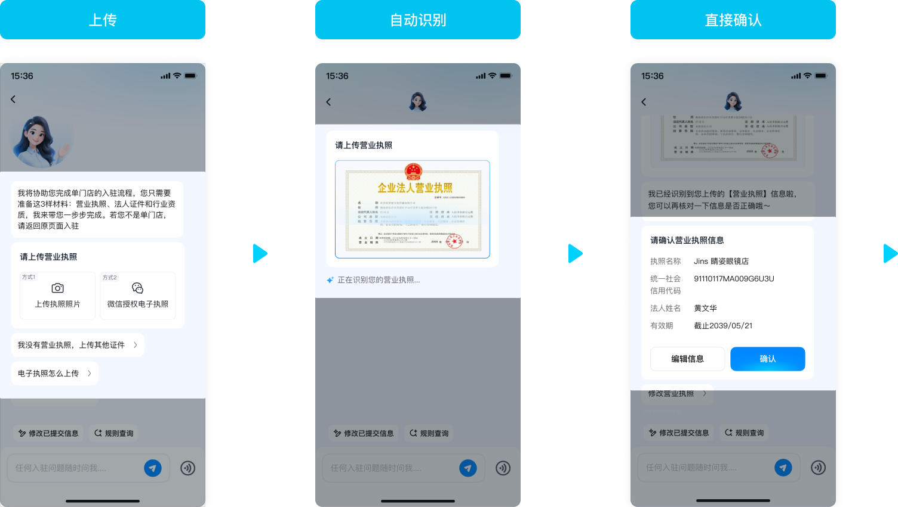
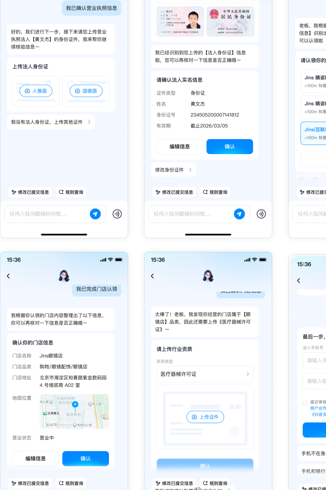
How to do
覆盖异常场景，商家有问就有答
5000+拦截原因&进线，很难全面覆盖，但可以根据交互操作分成几个基本类型。
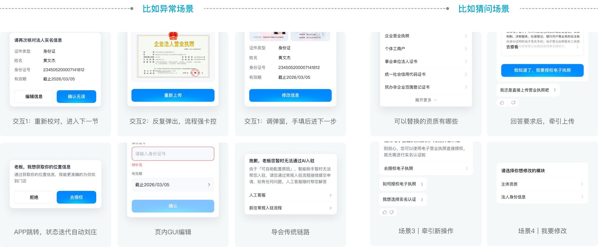
一期覆盖不全上线，遇到的所有问题都引导回传统人工入驻，成功转化率只有18.13%。 二期全部异常场景覆盖后，转化率才提升到23.15%。
The third challenge
招商页信息稳定、很难持续增长
看过竞品发现，招商核心内容就几项，有什么利益、同行成功商家、有什么政策。 有意思的商家自然会加入，转化一直不高不低；但想增长，需要真正知道目标商家到底需要什么。
摸清最重要的1-2项信息
转向分人群击破
利用好入口形成组合拳
第一阶段｜全面覆盖商家
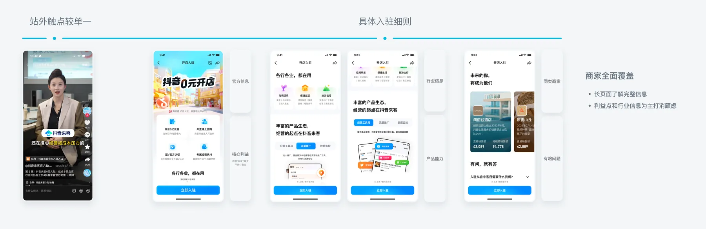
第二阶段｜联动招商入口，突破3,4线城市中小商家
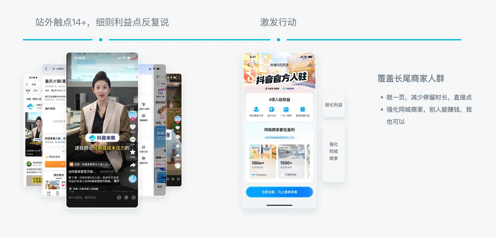